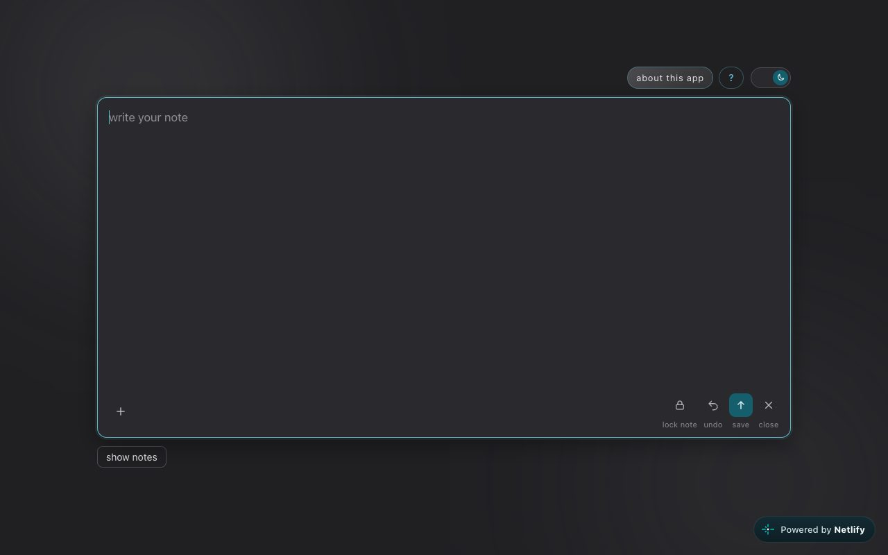
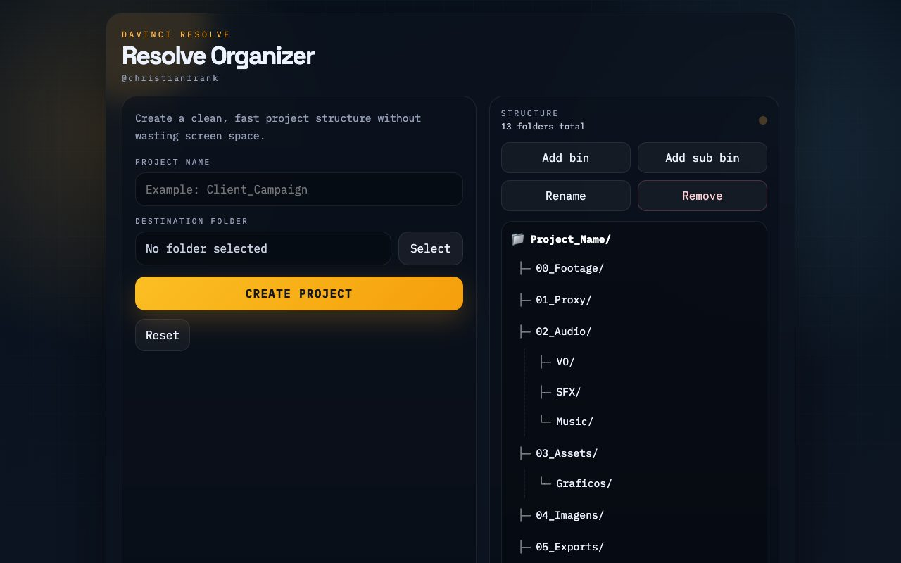
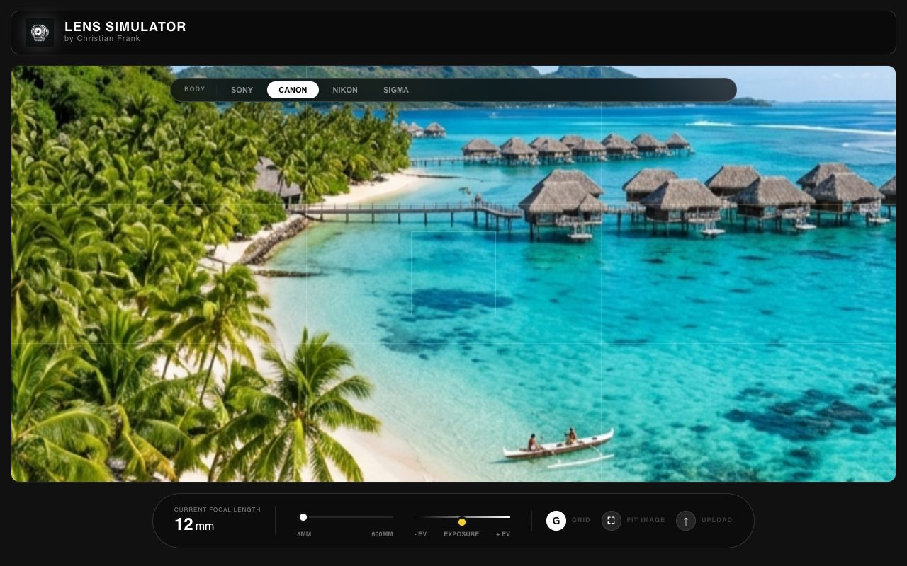
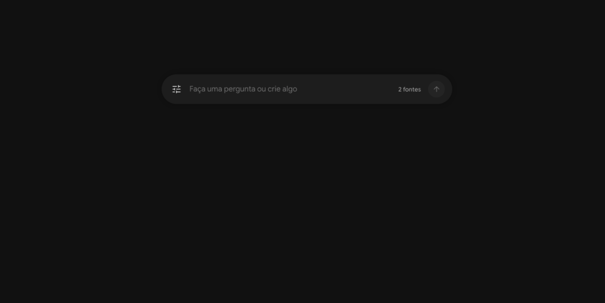

Catálogo
Projetos no navegador
Cada app abre direto no navegador. Filtre por categoria ou pressione / para buscar.
CATEGORIA
-
01Ferramentas

yourDraftNotes
Editor de notas no navegador com pastas, notas protegidas por senha (AES-GCM), modo leitura/edição e visualização em grafo.
-
02Foto & Vídeo

Resolve Organizer
Cria a estrutura padronizada de pastas (Bins) para projetos do DaVinci Resolve: Footage, Audio, Graphics, Proxies e Timelines.
-
03Foto & Vídeo

LensSimulation
Simulador de objetivas fotográficas: veja como distância focal, abertura e profundidade de campo mudam a imagem.
-
04Ferramentas

FastReadAndWrite
Busca local em pastas do seu computador: leia, edite e proteja com senha seus arquivos de texto, direto no navegador.
Nada no índice
AJUSTE O FILTRO OU O TERMO DE BUSCA